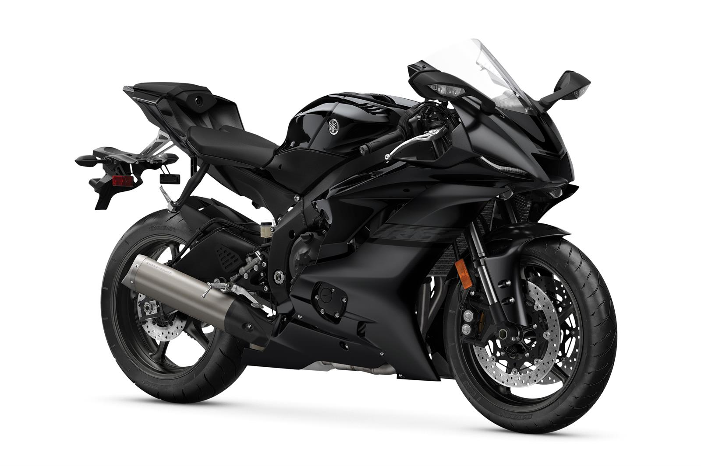

Yamaha YZF-R6
The Yamaha YZF-R6 is a true supersport icon that brings track performance to the streets. With aggressive styling, razor-sharp handling, and a high-revving engine, it’s built for riders who demand pure adrenaline and precision in every curve.
Specifications
- Engine displacement: 599 cc
- Power output: approx. 87.1 kW (118 hp)
- Cylinder layout: Inline 4-cylinder
- Cooling system: Liquid-cooled
- Transmission: 6-speed
Chassis & Brakes
- Front brake: Dual 320 mm discs with radial calipers
- Rear brake: 220 mm disc
- Front suspension: Fully adjustable USD fork
- Rear suspension: Adjustable monoshock
- ABS: Standard
Dimensions & Weight
- Seat height: 850 mm
- Weight (wet): approx. 190 kg
- Fuel tank capacity: 17 liters
Key Features
- Race-inspired aerodynamic fairing
- High-revving engine for max performance
- Advanced electronics and riding modes
- Lightweight aluminum Deltabox frame
- Legendary supersport heritage
Price: CHF 14,990.–
← Back to overview